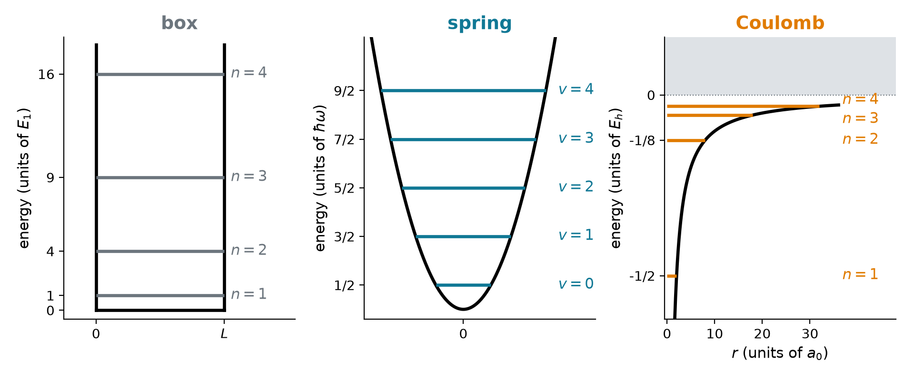
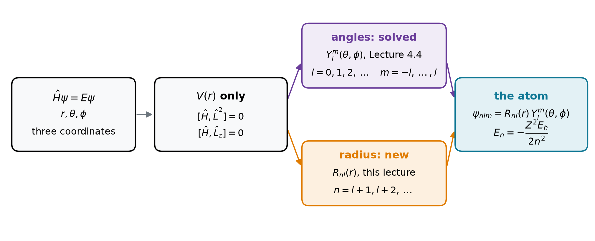
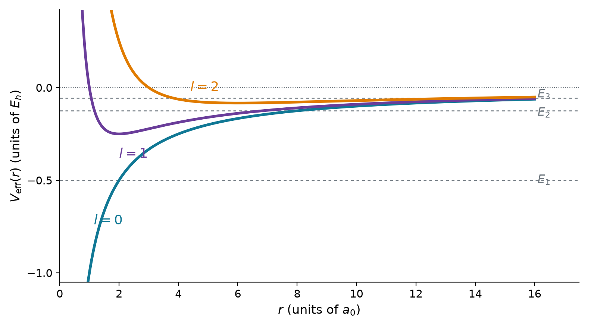
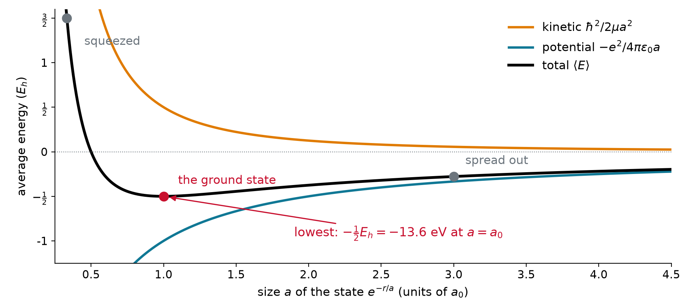
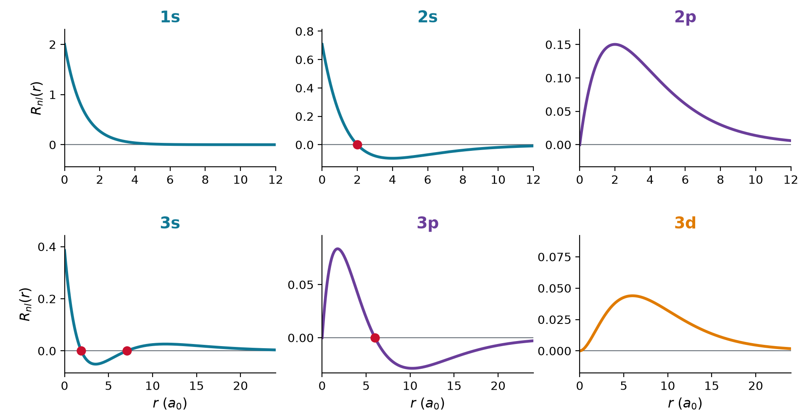
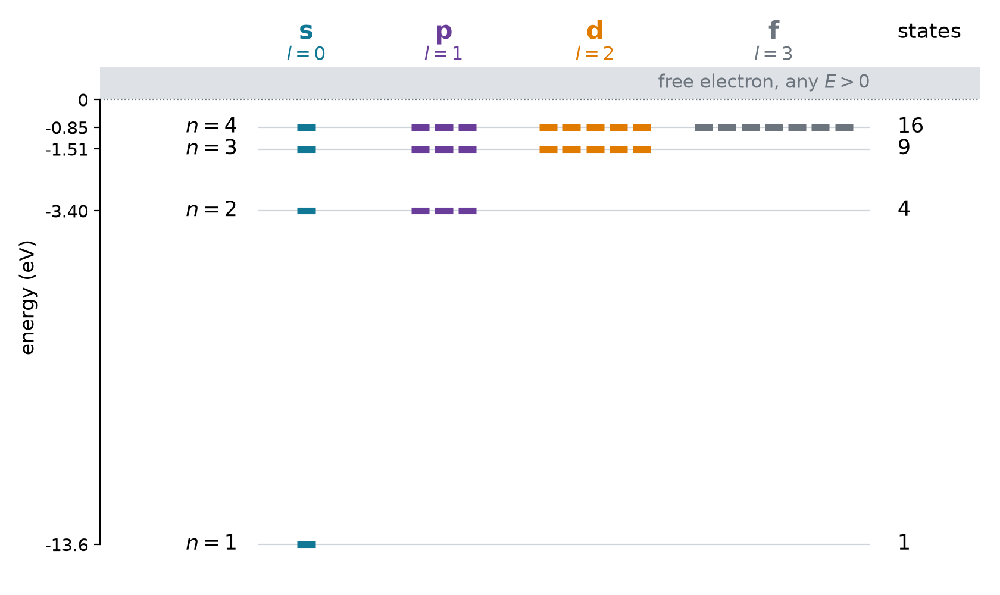
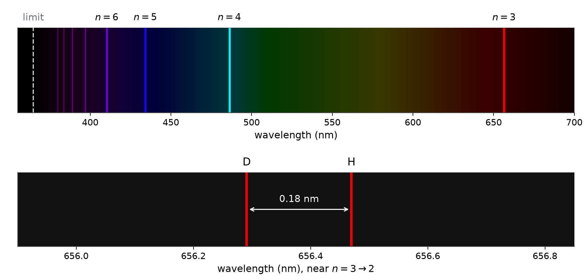

Chem 3240 · Lecture 5.1

\hat{H} = -\frac{\hbar^2}{2\mu}\nabla^2 - \frac{Ze^2}{4\pi\varepsilon_0 r}, \qquad \hat{H}\,\psi(r, \theta, \phi) = E\,\psi(r, \theta, \phi)
V depends on r alone. Turn the atom about the nucleus: nothing changes (Noether, Lecture 4.4)
[\hat{H}, \hat{L}^2] = 0, \qquad [\hat{H}, \hat{L}_z] = 0
\nabla^2 = \frac{1}{r^2}\frac{\partial}{\partial r}\left(r^2\frac{\partial}{\partial r}\right) - \frac{\hat{L}^2}{\hbar^2r^2} \quad\Longrightarrow\quad \hat{H} = -\frac{\hbar^2}{2\mu}\,\frac{1}{r^2}\frac{\partial}{\partial r}\left(r^2\frac{\partial}{\partial r}\right) + \frac{\hat{L}^2}{2\mu r^2} - \frac{Ze^2}{4\pi\varepsilon_0 r}

\psi(r, \theta, \phi) = R(r)\,Y_l^m(\theta, \phi), \qquad \hat{L}^2\,Y_l^m = \hbar^2l(l+1)\,Y_l^m
Insert R\,Y_l^m, let \hat{L}^2 act, divide by Y_l^m:
-\frac{\hbar^2}{2\mu}\,\frac{1}{r^2}\frac{d}{dr}\left(r^2\frac{dR}{dr}\right) + \left[\frac{\hbar^2l(l+1)}{2\mu r^2} - \frac{Ze^2}{4\pi\varepsilon_0 r}\right]R = E\,R
Then R = u/r makes the radial term -(\hbar^2/2\mu)\,u''/r; multiply by r. A wall at the nucleus: u(0) = 0
-\frac{\hbar^2}{2\mu}\,\frac{d^2u}{dr^2} + V_{\mathrm{eff}}(r)\,u = E\,u, \qquad u(0) = 0
V_{\mathrm{eff}}(r) = -\frac{Ze^2}{4\pi\varepsilon_0 r} + \frac{\hbar^2l(l+1)}{2\mu r^2}

\hat{H} contains only \hbar, \mu and e^2/4\pi\varepsilon_0: they build one length and one energy
Length: where confining the electron costs as much kinetic energy as the attraction pays
\frac{\hbar^2}{\mu a^2} = \frac{e^2}{4\pi\varepsilon_0 a} \quad\Longrightarrow\quad a_0 = \frac{4\pi\varepsilon_0\hbar^2}{\mu e^2} = 52.9\ \text{pm}
Energy: the Coulomb energy at that distance
E_h = \frac{e^2}{4\pi\varepsilon_0a_0} = \frac{\hbar^2}{\mu a_0^2} = 27.2\ \text{eV}

\langle E\rangle = \frac{\hbar^2}{2\mu a^2} - \frac{e^2}{4\pi\varepsilon_0 a} \quad\text{is lowest at } a = a_0: \quad \langle E\rangle = -\frac{E_h}{2} = -13.6\ \text{eV}
E_n = -\frac{Z^2}{n^2}\,\frac{E_h}{2} = -13.6\ \text{eV}\,\frac{Z^2}{n^2}, \qquad \psi_{nlm}(r, \theta, \phi) = R_{nl}(r)\,Y_l^m(\theta, \phi)
n = 1, 2, 3, \dots \qquad l = 0, 1, \dots, n - 1 \qquad m = -l, \dots, l
Show that u = re^{-r/a} solves the radial equation with l = 0. Find a and E.
u'' = \left(\frac{r}{a^2} - \frac{2}{a}\right)e^{-r/a} \quad\Longrightarrow\quad -\frac{\hbar^2}{2\mu}\left(\frac{r}{a^2} - \frac{2}{a}\right) - \frac{Ze^2}{4\pi\varepsilon_0} = E\,r \quad\text{for every } r
\text{no } r: \ \frac{\hbar^2}{\mu a} = \frac{Ze^2}{4\pi\varepsilon_0} \Rightarrow a = \frac{a_0}{Z} \qquad\qquad \text{with } r: \ E = -\frac{\hbar^2}{2\mu a^2} = -\frac{Z^2E_h}{2}
Polynomial of degree n - 1 times e^{-\rho/n}, with \rho = Zr/a_0 and a common factor (Z/a_0)^{3/2}:
| orbital | n | l | R_{nl}\,/\,(Z/a_0)^{3/2} | radial nodes |
|---|---|---|---|---|
| 1s | 1 | 0 | 2\,e^{-\rho} | 0 |
| 2s | 2 | 0 | \frac{1}{2\sqrt{2}}\,(2 - \rho)\,e^{-\rho/2} | 1 |
| 2p | 2 | 1 | \frac{1}{2\sqrt{6}}\,\rho\,e^{-\rho/2} | 0 |
| 3s | 3 | 0 | \frac{2}{81\sqrt{3}}\,(27 - 18\rho + 2\rho^2)\,e^{-\rho/3} | 2 |
| 3p | 3 | 1 | \frac{4}{81\sqrt{6}}\,(6 - \rho)\,\rho\,e^{-\rho/3} | 1 |
| 3d | 3 | 2 | \frac{4}{81\sqrt{30}}\,\rho^2\,e^{-\rho/3} | 0 |


List the states of hydrogen with n = 3 and what measurements of E, L^2 and L_z give.
3s\ (m = 0), \qquad 3p\ (m = -1, 0, 1), \qquad 3d\ (m = -2, \dots, 2)
1 + 3 + 5 = 9 = 3^2 \ \text{states, all with } E_3 = -\frac{13.6\ \text{eV}}{9} = -1.51\ \text{eV}
L^2 = 0,\ 2\hbar^2,\ 6\hbar^2 \ \text{for s, p, d}, \qquad L_z = m\hbar
Ionization energy, size of the ground state, and the 2 \to 1 line for He^+ and Li^{2+}.
-E_1 = 13.6\,Z^2\ \text{eV}: \quad 54.4\ \text{eV (He}^+), \quad 122.4\ \text{eV (Li}^{2+})
a_0/Z: \quad 26.5\ \text{pm (He}^+), \quad 17.6\ \text{pm (Li}^{2+})
2 \to 1 \text{ photon, } \tfrac{3}{4}\times13.6\,Z^2\ \text{eV}: \quad 40.8\ \text{eV},\ 30.4\ \text{nm (He}^+)
\phantom{2 \to 1 \text{ photon, } \tfrac{3}{4}\times13.6\,Z^2\ \text{eV}:} \quad 91.8\ \text{eV},\ 13.5\ \text{nm (Li}^{2+})
\tilde{\nu} = R\,Z^2\left(\frac{1}{n_1^2} - \frac{1}{n_2^2}\right), \qquad R_\infty = \frac{E_h}{2hc} = 109\,737\ \text{cm}^{-1}
R_M = \frac{R_\infty}{1 + m_e/m_N} \quad \text{for a nucleus of mass } m_N

H\alpha of hydrogen is at 656.47 nm in vacuum. Where is deuterium’s? (m_p = 1836.15\,m_e, m_d = 3670.48\,m_e)
\frac{\mu_H}{m_e} = \frac{1}{1 + 1/1836.15} = 0.999456, \qquad \frac{\mu_D}{m_e} = \frac{1}{1 + 1/3670.48} = 0.999728
\lambda_D = \lambda_H\,\frac{\mu_H}{\mu_D} = 656.47\ \text{nm}\times\frac{0.999456}{0.999728} = 656.29\ \text{nm}
| the hydrogen atom gives | what comes next |
|---|---|
| every level E_n and every state R_{nl}Y_l^m | shapes, sizes, real orbitals p_x, d_{xy}: Lecture 5.2 |
| n^2 states per level | spin doubles it; fields and spin-orbit coupling split it: Lecture 5.3 |
| the l degeneracy of 1/r | screening lifts it: 2s below 2p, the aufbau order: Chapter 7 |
| Rydberg’s constant from m_e, e, \varepsilon_0, h, c | what Bohr’s model could not reach: helium, intensities, fine structure |
One electron and a nucleus Ze: a central Coulomb force, so angular momentum is conserved and \psi = R_{nl}(r)\,Y_l^m(\theta, \phi) with the angles already solved. The radial function obeys a one-dimensional equation in V_{\mathrm{eff}} = -Ze^2/4\pi\varepsilon_0 r + \hbar^2l(l+1)/2\mu r^2. The constants build one length, a_0 = 52.9 pm, and one energy, E_h = 27.2 eV; the balance of confinement against attraction keeps the atom from collapsing. The radial function must die at large r, and that gives E_n = -Z^2E_h/2n^2 with l < n: n^2 states per level, a degeneracy special to 1/r. The level differences are Rydberg’s formula, now derived, down to the isotope shift of deuterium.
Chem 3240 · Quantum Mechanics